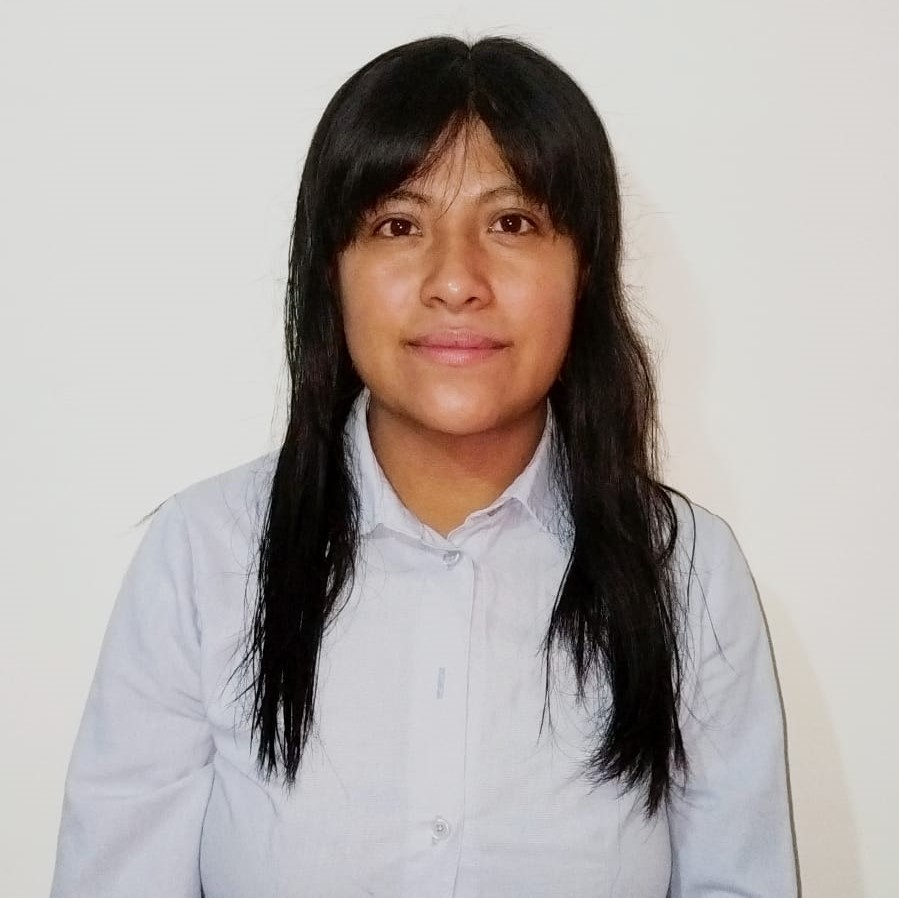

Nosotros
Somos un grupo de colaboradores profesionales en el desarrollo de páginas web, honrados de gozar de atributos como son la atención por los más mínimos detalles, la inteligencia, el espíritu de la juventud, la confianza y la pasión; que nos ha llevado a ofrecer a nuestros clientes productos de calidad y eficiencia para inspirar la imaginación y fomentar diversión.
Descubre más sobre las personas que hacen esto posible
Soy Desarrolladora Full Stack con una sólida ética de trabajo y una pasión por el aprendizaje continuo. Mi objetivo es desarrollarme profesionalmente en el ámbito tecnológico, aportando soluciones innovadoras y efectivas. Dentro de este proyecto mi principal papel es como parte del equipo de desarrollo y posteriormente en otras etapas realizare el papel de SCRUM master.
Desarrolladora Fullstack con formación en Ingeniería Mecatrónica y una sólida pasión por el desarrollo de aplicaciones web. Me destaco por mi capacidad de aprendizaje continuo, interés en los idiomas, y mi afinidad por la lectura de libros de desarrollo personal. En mi experiencia profesional, he asumiendo roles clave como Scrum Master , donde gestioné de manera efectiva y promoví metodologías ágiles para alcanzar los objetivos de manera eficiente.
Soy un desarrollador Full Stack apasionado por el aprendizaje continuo y la resolución de problemas. Con experiencia previa en el ámbito legal, he desarrollado habilidades como la atención al detalle, la comunicación efectiva y el trabajo en equipo, que ahora aplico al desarrollo de software. Como parte del equipo de desarrollo, me dediqué a implementar las funcionalidades del sitio web, asegurándome de que el código sea eficiente, limpio y funcional.
Soy Desarrollador Java Full Stack Jr. y he desempeñado el papel de Scrum Master, Me encanta diseñar y crear, me gusta admirar como la tecnologia hace grandes cambios en la forma de vivir de todas las personas y me gustaria ser parte de ese gran avance, creo que todos podemos hacer nuestra parte para que el mundo sea cada día mejor.

Full Stack Developer Jr. Soy una persona curiosa y apasionada por la tecnología, con experiencia en la gestión de equipos y conocimientos en desarrollo web. Actualmente formo parte de este proyecto colaborativo desempeñándome como parte del equipo de desarrollo así como Scrum master, donde cada integrante aporta sus fortalezas para crear un e-commerce innovador y eficiente.